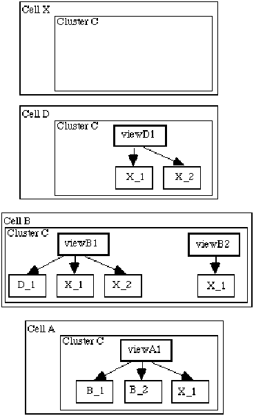
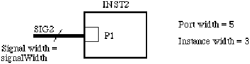

clusterConfiguration ::= '(' 'clusterConfiguration'
clusterConfigurationNameDef
( viewRef | leaf | unconfigured )
{ comment | frameConfiguration | globalPortScope | instanceConfiguration
| <nameInformation> | property | userData }
')'
ClusterConfiguration defines a configuration for a cluster. There may be multiple configurations defined for each view. Each configuration identifies the view to which it relates.
When an instance is defined, it references a cluster of a cell. In order to define the full hierarchy for a design, it is necessary to indicate, for each instance, which view is to be used for the design hierarchy and in turn the configuration for all instances within this view. This is achieved by clusterConfiguration and instanceConfiguration.
Each clusterConfiguration defines a configuration to be used for instances within the view. By following this through each level, a full design hierarchy is defined.
The view referenced by viewRef must not be a schematicSymbol. The viewRef must not contain a nested clusterRef.
Leaf means that the cluster is to be treated as a leaf, i.e. the hierarchy expansion goes no further. This is an explicit decision to terminate the hierarchy at this cluster.
Unconfigured means that the configuration of the cluster has not yet been fully specified. Further expansion or termination of the hierarchy has not yet been decided. This could be used to transfer incomplete work.
There are no constraints on the number of cluster configurations (including unconfigured and leaf) in a cluster.
In the following diagram each box with a thick border represents the definition of a view. The annotation in the box indicates the name of the view, e.g. VIEWA1 (for the purposes of the this example, each of the cells is assumed to have one cluster named C).
The other boxes represent instances of other cell clusters within the view with the annotation in the box representing the instance identifier and the name of the cell instanced, e.g. B_1 indicates the first instance of cell B.

The above diagram represents views of cells A, B, D and X which instance clusters of cells B, D and X (for the purposes of this example X is considered to be a 'leaf' cluster with no further instances below it). This is represented in the following EDIF fragment:
(cell X ... (cluster C (interface ...) (clusterHeader ...)))
(cell D ...
(cluster C (interface ...) ...
(schematicView VIEWD1 (schematicViewHeader ...)
(logicalConnectivity
(instance X_1 (clusterRef C (cellRef X)))
(instance X_2 (clusterRef C (cellRef X))))
...)))
(cell B ...
(cluster C (interface ...) ...
(schematicView VIEWB1 (schematicViewHeader ...)
(logicalConnectivity
(instance D_1 (clusterRef C (cellRef D)))
(instance X_1 (clusterRef C (cellRef X)))
(instance X_2 (clusterRef C (cellRef X))) ...)
...)
(schematicView VIEWB2 (schematicViewHeader ...)
(logicalConnectivity
(instance X_1 (clusterRef C (cellRef X))) ...)
...)))
(cell A ...
(cluster C (interface ...) ...
(schematicView VIEWA1 (schematicViewHeader ...)
(logicalConnectivity
(instance B_1 (clusterRef C (cellRef B)))
(instance B_2 (clusterRef C (cellRef B)))
(instance X_1 (clusterRef C (cellRef X))))
...)))
Now the definitions of the cells are specified, the configurations for each can be specified.
For cell X there is a default cluster configuration which indicates that this cluster is a leaf:
(cell X ...
(cluster C (interface ...)
(clusterHeader ...)
(clusterConfiguration X (leaf))
(defaultClusterConfiguration X)))
For cell D a configuration needs to be defined to indicate that the default cluster configuration of X is to be used for both instances of X. Another configuration could specify that the cluster may be used as a leaf item.
(cell D ...
(cluster C ...
(schematicView VIEWD1 ...)
(clusterConfiguration DV1C1 (viewRef VIEWD1))
(clusterConfiguration DV1C2 (leaf))
(defaultClusterConfiguration DV1C1)))
Likewise for view VIEWB2 of cell B only one configuration is needed. Let this be called BV2C1, defined as:
(cell B ...
(cluster C ...
(schematicView VIEWB1 ...)
(schematicView VIEWB2 ...)
(clusterConfiguration BV2C1 (viewRef VIEWB2))))
For cell B, view VIEWB1, two configurations could be defined. One would point to the configuration DV1C1 for the instance of D. The other would indicate that for this instance of D no further expansion was to take place. Let these configurations be called BV1C1 and BV1C2:
(cell B ...
(cluster C ...
(schematicView VIEWB1 ...)
(schematicView VIEWB2 ...)
(clusterConfiguration BV1C1 (viewRef VIEWB1)
(instanceConfiguration D_1
(clusterConfigurationRef DV1C1)))
(clusterConfiguration BV1C2 (viewRef VIEWB1)
(instanceConfiguration D_1
(clusterConfigurationRef DV1C2)))
(defaultClusterConfiguration BV1C1)))
For cell A, view VIEWA1 many different configurations could be defined. For each configuration, a choice must be made for each of the instances of clusters within cell B as to the configuration to be selected. The choice for each instance is one of the following: BV1C1, BV1C2 or BV2C1. Each choice uniquely defines the full expansion down through the hierarchy.
(cell A ...
(cluster C ...
(schematicView VIEWA1 ...)
(clusterConfiguration CONFIG1 (viewRef VIEWA1)
(instanceConfiguration B_1
(clusterConfigurationRef BV1C1))
(instanceConfiguration B_2
(clusterConfigurationRef BV1C2)))
(defaultClusterConfiguration CONFIG1)))
In this example, for each of the instances B_1 and B_2, a different configuration of the cluster is selected.
defaultClusterConfiguration design
clusterConfigurationNameCaseSensitive ::= '(' 'clusterConfigurationNameCaseSensitive'
booleanToken
')'
ClusterConfigurationNameCaseSensitive defines whether or not the strings contained within nameInformation for clusterConfigurations are to be considered as case sensitive. The default is that names are case sensitive. Following normal precedence rules, this applies to the entire EDIF data if this form occurs in edifHeader, or to the entire library if it occurs in libraryHeader.
See clusterNameCaseSensitive for an example.
nameInformation clusterNameCaseSensitive
clusterConfigurationNameDef ::= nameDef
ClusterConfigurationNameDef defines the name of a cluster configuration.
clusterConfigurationNameRef ::= nameRef
clusterConfigurationRef defaultClusterConfiguration
ClusterConfigurationNameRef references a previously-defined clusterConfigurationNameDef.
clusterConfigurationRef ::= '(' 'clusterConfigurationRef'
clusterConfigurationNameRef
')'
designHierarchy instanceConfiguration
ClusterConfigurationRef references a cluster configuration within a cell.
The cell is defined by the context in which clusterConfigurationRef is used. When used in designHierarchy, the cell is the cell referenced by the enclosing design construct.
(design CPU
(cellRef CPU (libraryRef LIB1))
(designHeader ...)
(designHierarchy CPU
(clusterRef C1)
(clusterConfigurationRef CONFIG1) ...) ...)
In this example, the cluster configuration named CONFIG1 will be found in the cluster C1 of cell CPU in library LIB1.
clusterHeader ::= '(' 'clusterHeader'
{ documentation | <nameInformation> | property | <status> }
')'
ClusterHeader gathers together data relating to the cluster as a whole.
(cluster C1 (interface ...)
(clusterHeader
(status
(written
(timeStamp
(date 1992 4 29) (time 12 0 0))))
...) ...)
clusterNameCaseSensitive ::= '(' 'clusterNameCaseSensitive'
booleanToken
')'
ClusterNameCaseSensitive defines whether or not the strings contained within nameInformation for clusters are to be considered as case sensitive. Following normal precedence rules, this applies to the entire EDIF data if this form occurs in edifHeader, or to the entire library if it occurs in libraryHeader. The default is that names are case sensitive.
(clusterNameCaseSensitive (false))
This example indicates that two clusters with system names "foo" and "Foo" are to be considered the same, i.e. it would be a semantic error to have two such names in the same name scope.
nameInformation clusterNameDef
clusterNameDef ::= nameDef
ClusterNameDef is the name definition of a cluster.
clusterNameRef nameInformation viewRef viewNameDef
clusterNameRef ::= nameRef
ClusterNameRef is a reference to a clusterNameDef.
clusterPropertyDisplay ::= '(' 'clusterPropertyDisplay'
propertyNameRef
{ display | <propertyNameDisplay> }
')'
page schematicFrameImplementationDetails schematicSymbol
ClusterPropertyDisplay is used to define the display positions for a cluster property belonging to the cluster containing the clusterPropertyDisplay. There may be no more than one in any page or symbol for each cluster property.
cluster interconnectPropertyDisplay
clusterPropertyDisplayOverride ::= '(' 'clusterPropertyDisplayOverride'
propertyNameRef
( addDisplay | replaceDisplay | removeDisplay )
{ <propertyNameDisplay> }
')'
schematicInstanceImplementation
ClusterPropertyDisplay is used to override the display positions for a cluster property. There may be no more than one for each cluster property.
clusterPropertyDisplay cluster
clusterPropertyOverride ::= '(' 'clusterPropertyOverride'
propertyNameRef
( typedValue | untyped )
{ comment | <fixed> | propertyOverride }
')'
instance leafOccurrenceAnnotate occurrenceAnnotate occurrenceHierarchyAnnotate
ClusterPropertyOverride is used to override the value of a cluster property, either on instantiation or from within design.
(cell MUX (cellHeader ...)
(cluster C1
(interface ...)
(clusterHeader ...
(property P1 (integer 3)))
(schematicView SCHEM1 ...)
(maskLayoutView MIL_MASK ...)))
...
(cell MUX_USER (cellHeader ...)
(cluster C1
(interface ...)
(clusterHeader ...)
(schematicView SCHEM1
(schematicViewHeader ...)
(logicalConnectivity
(instance I1
(clusterRef C1 (cellRef MUX))
(clusterPropertyOverride P1
(integer 4))) ...) ...)))
In this example, the property P1 of cluster C1 of cell MUX is overridden and given a different value when used in cell MUX_USER.
cellPropertyOverride propertyOverride
clusterRef ::= '(' 'clusterRef'
clusterNameRef
[ cellRef ]
')'
designHierarchy instance viewRef
ClusterRef is used to reference a cluster.
CellRef must always be used when clusterRef appears in instance. Hence, it is never possible to create an instance of another cluster of the same cell.
CellRef must not be used in the context of designHierarchy.
(instance I1 (clusterRef BASIC (cellRef INVERTER)) ...)
In this example, the cluster BASIC within the cell INVERTER is being referenced.
color ::= '(' 'color'
red
green
blue
')'
backgroundColor displayAttributes
Color is used to express the color to be used for display purposes for fill patterns, border patterns, text and figures. Red, green and blue represent the percentage of saturation of each of the spectrum primary colors. The color specification of (color 100 100 100) represents white. The color specification of (color 0 0 0) represents black.
Color may be specified in figureGroup within the displayAttributes form in the technology block of a library. In this case, the color specified is the default color to be used in the figure group. If color is not specified, black is the default color.
Color may also be specified in figureGroupOverride within the displayAttributes form inside the figure itself. In this case, the color specified is used to override the default color for the figure.
Color is also used to specify background color.
(figureGroup Metal (displayAttributes (color 100 0 0 )) ...)
The first example defines a default color of red.
(figure
(figureGroupOverride Metal
(displayAttributes (color 0 0 20)) ...))
The second example overrides the default color for the figure group with a dark blue.
borderPattern figure fillPattern visible
comment ::= '(' 'comment'
{ stringToken }
')'
behaviorView cell cellPropertyOverride cluster clusterConfiguration clusterPropertyOverride commentGraphics connectivityBus connectivityBusSlice connectivityFrameStructure connectivityNet connectivityStructure connectivitySubBus connectivitySubNet connectivityView design diagram edif external figure figureGroup figureGroupOverride forFrame forFrameAnnotate geometryMacro globalPort globalPortBundle ieeeStandard ifFrame ifFrameAnnotate instance instancePortAttributes instancePropertyOverride interconnectAnnotate k2Build k2Generate k3Build k3ForEach k3Generate keywordMap leafOccurrenceAnnotate library localPortGroup logicalConnectivity logicDefinitions logicModelView logicValue maskLayoutView occurrenceAnnotate occurrenceHierarchyAnnotate otherwiseFrame otherwiseFrameAnnotate page pageCommentGraphics pcbLayoutView physicalScaling port portAnnotate portBundle portPropertyOverride property propertyOverride schematicBus schematicBusGraphics schematicBusSlice schematicFigureMacro schematicFrameImplementationDetails schematicNet Comment contains information interpretable by humans only. If possible, the recipient should preserve this information within the target database in an equivalent structure. The entire form can be ignored without loss of significant design data.
Comments are allowed in places explicitly indicated in the syntax of each keyword. Comment encloses an arbitrary number of strings.
(comment "Type_three buffer cell")
...
(comment "<- I think this is the problem")
(comment "This polygon represents the VDD grid."
"There are two forms of this signal.")
The first two comments each contain one string token; the last comment contains two.
commentGraphics ::= '(' 'commentGraphics'
{ annotate | comment | figure | <originalBoundingBox> | propertyDisplay
| userData }
')'
pageBorderTemplate pageTitleBlockTemplate schematicFigureMacro schematicForFrameBorderTemplate schematicFrameImplementationDetails schematicGlobalPortTemplate schematicIfFrameBorderTemplate schematicInterconnectTerminatorTemplate schematicJunctionTemplate schematicMasterPortTemplate schematicOffPageConnectorTemplate schematicOnPageConnectorTemplate schematicOtherwiseFrameBorderTemplate schematicRipperTemplate schematicSymbol schematicSymbolBorderTemplate schematicSymbolPortTemplate
CommentGraphics is used to include comment figures and text within an object, and has an association with the enclosing object.
CommentGraphics which are defined in a symbol, template or view are not present in instances of the object.
CommentGraphics is used for display purposes only, and is not fabricated.
(schematicGlobalPortTemplate ...
(commentGraphics
(figure graphics
(rectangle (pt 0 0) (pt 7 3)))
(annotate
"ABC"
(display textGraphics
(transform (origin (pt 0 0))))) ...))
The above example describes a picture which contains the string "ABC" and a rectangle, as shown in the figure below. The picture is defined in a template, and does not appear when the template is used.
companyName ::= '(' 'companyName'
stringToken
')'
CompanyName is the name of the company creating or modifying the drawing.
(companyName "EDIF Inc.")
approvedDate contract originalDrawingDate drawingDescription drawingIdentification drawingSize engineeringDate pageIdentification revision pageTitle
companyNameDisplay ::= '(' 'companyNameDisplay'
( addDisplay | replaceDisplay | removeDisplay )
')'
pageTitleBlockAttributeDisplay
CompanyNameDisplay is used to define display positions for companyName. When used in the context of pageTitleBlock, it may add, replace or remove displays. Within the context of a template definition, only addDisplay may be used.
complementedName ::= '(' 'complementedName'
{ complementedNamePart | nameDimension | namePartSeparator |
simpleName }
')'
nameDimensionStructure nameStructure
ComplementedName is used to specify that the name of the object is complemented, i.e. implies the inverse of the same name without a complement indicator. The method for specifying complements varies widely among systems, e.g. "~enable", "Nenable" or "enable" with a bar over it.
(nameInformation
(primaryName "~a"
(nameStructure
(complementedName "a" ))))
In this example the character '~' implies complement in the original system. In EDIF the complement is specified explicitly with complementedName.
complementedNamePart ::= '(' 'complementedNamePart'
{ complementedNamePart | namePartSeparator | simpleName }
')'
complementedName complementedNamePart complexName
ComplementedNamePart is used to specify that an ordered list of substrings, complementedNameParts, namePartSeparators and simpleNames, of the original name is complemented.
(nameInformation
(primaryName "rd/~wr"
(nameStructure
(complexName "rd"
(namePartSeparator "/" )
(complementedNamePart "wr" )))))
Here, the original name "rd/~wr" contains a complemented substring "wr". ComplementedNamePart is used to specify this without the use of the special character '~'.
nameDimension namePartSeparator simpleName
complexGeometry ::= '(' 'complexGeometry'
geometryMacroRef
transform
')'
ComplexGeometry is used to place a geometryMacro, which is a set of pre-defined graphical entities, into a figure. A transform must be provided to indicate how the geometryMacro is to be transformed.
(figure TOP
(path (pointList ...))
(complexGeometry
(geometryMacroRef BULLET)
(transform (origin (pt 200 300)))))
This example shows a pre-defined piece of graphics named BULLET being placed in a figure TOP.
complexName ::= '(' 'complexName'
{ complementedNamePart | nameDimension | namePartSeparator |
simpleName }
')'
nameDimensionStructure nameStructure
ComplexName is used to specify in an explicit format the structural components and relationships implied by special characters and substrings in an object's originalName. An ordered list of simpleNames, namePartSeparators, complementedNameParts and nameDimensions is specified by a complexName. More than one nameDimension indicates that the object is multi-dimensional, with the first nameDimension in the list sequencing slowest and the last nameDimension in the list sequencing fastest.
(schematicBus A (signalGroupRef ...)
(schematicInterconnectHeader
(nameInformation
(primaryName "A[0:3]"
(nameStructure
(complexName "A"
(nameDimension
(nameDimensionStructure
(sequence 0 3))))))) ... ) ... )
Here a bus, a one-dimensional object, is specified using the complexName format to capture the name and size of the bus without using the special characters '[', ']', and ':'.
compound ::= '(' 'compound'
{ logicNameRef }
')'
Compound is an attribute of a logic value which is used to specify a logic value that has a well-defined relationship to previously-defined logic values. This allows the derivation of various degrees of unknown values using other logic values that are defined using compound. Compound is intended to assist in the process of relating the logic name to those used in a particular target simulator. This does not imply any relationship for comparison of logic values in subsequent descriptions, such as may be specified in a logicOneOf construct.
(logicDefinitions ... (logicValue WF ...) (logicValue WT ...) (logicValue SF ...) (logicValue ST ...) (logicValue F (compound WF SF)) (logicValue T (compound WT ST)) (logicValue W (compound WF WT)) (logicValue S (compound SF ST)) (logicValue U (compound WF WT SF ST)))
In the above example, the logic value T is a compound of the logic values WT and ST. T is treated as an individual value in later descriptions.
condition ::= '(' 'condition'
booleanExpression
')'
This specifies the condition which determines whether or not an ifFrame is expanded. If the booleanExpression evaluates to true, the ifFrame is expanded.
(ifFrame F1
(condition
(booleanParameterRef doubleBuffer))
...)
This frame may contain optional circuitry to achieve double buffering. The frame is included if the parameter doubleBuffer is true.
conditionDisplay ::= '(' 'conditionDisplay'
( addDisplay | replaceDisplay | removeDisplay )
')'
schematicIfFrameBorder schematicIfFrameBorderTemplate
Adds, replaces or removes display positions for the condition attribute of the associated ifFrame.
(conditionDisplay
(addDisplay
(display
(figureGroupOverride Green
(displayAttributes ...))
(transform (origin (pt 25 30))
(rotation 90)))))
connectedSignalIndexGenerator ::= '(' 'connectedSignalIndexGenerator'
integerExpression
')'
ConnectedSignalIndexGenerator provides an integerExpression which defines how a wide port on an instance is to be connected to a wide signal. The instance may also be wide (iterated).
The integerExpression is evaluated for different values of the port index (portIndexValue) and instance index (instanceIndexValue) and the result of each evaluation is an integer value which indicates how a single bit of the port is to be connected to the wide signal. The integer resulting from the evaluation indicates the index value of the signal to which the port bit is connected.
The integer result of the evaluation must be greater than or equal to zero and less than the width of the signal to which the port is connected.
The integerExpression may refer, for example, to constants and parameters that are available within its scope.
ConnectedSignalIndexGenerator is not available for use in connecting signals to master ports. These are always connected sequentially as if the connectedSignalIndexGenerator was:
(connectedSignalIndexGenerator (portIndexValue))
If no connectedSignalIndexGenerator construct is present for a port instance, then the default value is as follows:
(connectedSignalIndexGenerator
(integerRemainder
(integerSum
(portIndexValue)
(integerProduct
(integerParameterRef portWidthParameter)
(instanceIndexValue)))
(integerParameterRef signalWidthParameter)))
where the width of the port is defined by a parameter named portWidthParameter and the width of the signal is defined by a parameter signalWidthParameter.
The connectivity defined by this expression is illustrated in the examples below and is consistent with the Level 0 definitions of fanned out and commoned connections as defined under instance.

The figure above illustrates an example of an instance of width 3 with a wide port, P1, with width P1portWidth, connected to a wide signal, SIG2 with width defined by a parameter signalWidth. This is illustrated in the EDIF fragment below:
(logicalConnectivity
(instance INST2 (clusterRef ...)
(instanceWidth 3)
(integerParameterAssign
p1PortWidth 5)
(instancePortAttributes P1
(connectedSignalIndexGenerator
(integerRemainder
(integerSum
(portIndexValue)
(integerProduct
5
(instanceIndexValue)))
(integerParameterRef
signalWidth)))))
...
(signal SIG2
(signalJoined
(portInstanceRef P1 (instanceRef INST2)))
(signalWidth (integerParameterRef signalWidth))
...) ...)
The connectivity defined in this example (on expansion) would be as follows for a value of signalWidth = 15:
| Instance number | Port bit of P1 | Connected to signal bit of SIG1 |
| 0 | 0 | 0 |
| 0 | 1 | 1 |
| 0 | 2 | 2 |
| 0 | 3 | 3 |
| 0 | 4 | 4 |
| 1 | 0 | 5 |
| 1 | 1 | 6 |
| 1 | 2 | 7 |
| 1 | 3 | 8 |
| 1 | 4 | 9 |
| 2 | 0 | 10, etc. |
The connectivity defined in this example (on expansion) would be as follows for a value of signalWidth = 5:
| Instance number | Port bit of P1 | Connected to signal bit of SIG1 |
| 0 | 0 | 0 |
| 0 | 1 | 1 |
| 0 | 2 | 2 |
| 0 | 3 | 3 |
| 0 | 4 | 4 |
| 1 | 0 | 0 |
| 1 | 1 | 1 |
| 1 | 2 | 2 |
| 1 | 3 | 3 |
| 1 | 4 | 4 |
| 2 | 0 | 0, etc. |

The figure above illustrates an example of an instance with a wide port, P1, connected to a wide signal, SIG1. This is illustrated in the EDIF fragment below:
(logicalConnectivity
(instance INST1 (clusterRef ...)
(instancePortAttributes P1
(connectedSignalIndexGenerator
(portIndexValue))))
...
(signal SIG1
(signalJoined
(portInstanceRef P1 (instanceRef INST1)))
(signalWidth 15)
...) ...)
The connectivity defined in this example (on expansion) would be as follows:
| Port bit of P1 | Connected to signal bit of SIG1 |
| 0 | 0 |
| 1 | 1 |
| 2 | 2, etc. |

The figure above illustrates an example of an instance of width 3 with a wide port, P1, connected to a wide signal, SIG2. This is illustrated in the EDIF fragment below:
(logicalConnectivity
(instance INST2 (clusterRef ...)
(instanceWidth 3)
(instancePortAttributes P1
(connectedSignalIndexGenerator
(integerSum
(portIndexValue)
(integerProduct
5
(instanceIndexValue))))))
...
(signal SIG2
(signalJoined
(portInstanceRef P1 (instanceRef INST2)))
(signalWidth 15)
...) ...)
The connectivity defined in this example (on expansion) would be as follows:
| Instance number | Port bit of P1 | Connected to signal bit of SIG1 |
| 0 | 0 | 0 |
| 0 | 1 | 1 |
| 0 | 2 | 2 |
| 0 | 3 | 3 |
| 0 | 4 | 4 |
| 1 | 0 | 5 |
| 1 | 1 | 6 |
| 1 | 2 | 7 |
| 1 | 3 | 8 |
| 1 | 4 | 9 |
| 2 | 0 | 10, etc. |
If it were intended that the corresponding bit of each port on each instance be connected together, then this would be achieved with the following connectedSignalIndexGenerator:
(connectedSignalIndexGenerator (portIndexValue))
In this case the signal SIG2 only needs to be 5 bits wide. The connectivity achieved is illustrated in the table below:
| Instance number | Port bit of P1 | Connected to signal bit of SIG1 |
| 0 | 0 | 0 |
| 0 | 1 | 1 |
| 0 | 2 | 2 |
| 0 | 3 | 3 |
| 0 | 4 | 4 |
| 1 | 0 | 0 |
| 1 | 1 | 1 |
| 1 | 2 | 2 |
| 1 | 3 | 3 |
| 1 | 4 | 4 |
| 2 | 0 | 0, etc. |
connectedSignalIndexGeneratorDisplay
connectedSignalIndexGeneratorDisplay ::= '(' 'connectedSignalIndexGeneratorDisplay'
( addDisplay | replaceDisplay | removeDisplay )
')'
ConnectedSignalIndexGeneratorDisplay provides display positions for a connectedSignalIndexGenerator.
connectivityBus ::= '(' 'connectivityBus'
interconnectNameDef
signalGroupRef
interconnectHeader
connectivityBusJoined
{ comment | connectivityBusSlice | connectivitySubBus | userData }
')'
connectivityFrameStructure connectivityStructure
A connectivityBus is a structured representation of connectivity. Structural connectivity allows the ordering of ports to be described and makes an association between signals, ports and rippers.
ConnectivityBus has a name, interconnectNameDef, and a header. Its structure in terms of the signals it contains is defined by a reference to a signalGroup given by signalGroupRef. Its structure in terms of the ports that it connects together is given within connectivityBusJoined.
The subbusses that a connectivityBus contains further describe the structure of the connectivity in a manner analogous to connectivitySubNet for connectivityNet. The structure may also be further elaborated by using connectivityBusSlice, which consists of a subset of the signals of a connectivityBus.
A connectivityBus provides further information about the connectivity described in the signals that are contained in the signalGroup referenced by signalGroupRef. Each single-bit port referenced directly (as a single-bit port) or indirectly (via a portBundle) by the connectivityBusJoined must also be referenced by the corresponding signal.
(signal A0
(signalJoined
(portInstanceRef P3_0
(instanceRef I1))
...))
(signal A1
(signalJoined
(portInstanceRef P3_1
(instanceRef I1))
...))
(signal A2
(signalJoined
(portInstanceRef P3_2
(instanceRef I1))
...))
(signal A3
(signalJoined
(portInstanceRef P3_3
(instanceRef I1))
...))
(signalGroup A
(signalList (signalRef A0) (signalRef A1)
(signalRef A2) (signalRef A3)))
...
(connectivityBus busA
(signalGroupRef A)
(interconnectHeader ...)
(connectivityBusJoined
(portJoined (portInstanceRef P3 (instanceRef I1))) ...)
...)
In this example, there is an instance I1 with a portBundle P3, which is 4 bits wide. This instance port P3 is joined to connectivityBus busA, which is a bus 4 bits wide. The signals contain the connectivity of the individual bits of the portBundle P3.
schematicBus signalGroup connectivityNet
connectivityBusJoined ::= '(' 'connectivityBusJoined'
portJoined
{ connectivityRipperRef }
')'
connectivityBus connectivityBusSlice connectivitySubBus
ConnectivityBusJoined lists all the ports and rippers that are connected to the bus, bus slice or subbus. It is analogous to connectivityNetJoined in net.
The items referenced in portJoined must also be referenced in the corresponding signalJoined, i.e. for each wide port in the portJoined in connectivityBusJoined there must be a reference to a single bit of that port in each of the signals in the flattened bus or bus slice.
When used within connectivitySubBus, the connectivityBusJoined must be a subset of the connectivityBusJoined of the immediately-enclosing bus, subbus or bus slice.
(connectivityBusJoined (portJoined (portRef MP1) ...) (connectivityRipperRef R1))
In this example, the master port MP1 and a connectivityRipper R1 are joined to the bus.
schematicBusJoined connectivityNetJoined
connectivityBusSlice ::= '(' 'connectivityBusSlice'
interconnectNameDef
signalGroupRef
interconnectHeader
connectivityBusJoined
{ comment | connectivityBusSlice | connectivitySubBus | userData }
')'
connectivityBus connectivityBusSlice connectivitySubBus
A connectivityBusSlice is used to define part of a connectivityBus that has a width less than the width of the immediately-enclosing connectivityBus, connectivityBusSlice or connectivitySubBus. A connectivityBusSlice may be further subdivided into connectivityBusSlices and connectivitySubBusses.
No two connectivityBusSlices at a given level may refer to the same signalGroup.
The signalGroup referenced by the connectivityBusSlice must be a member of the signalGroup referenced by the enclosing bus or bus slice.
(signalGroup A0_1
(signalList (signalRef A0) (signalRef A1)))
(signalGroup A2_3
(signalList (signalRef A2) (signalRef A3)))
(signalGroup A
(signalList (signalRef A0_1) (signalRef A2_3)))
...
(connectivityBus A
(signalGroupRef A)
(interconnectHeader ...)
(connectivityBusJoined ...)
(connectivityBusSlice S0_1
(signalGroupRef A0_1)
(interconnectHeader ...)
(connectivityBusJoined ...) ...)
(connectivityBusSlice S2_3
(signalGroupRef A2_3)
(interconnectHeader ...)
(connectivityBusJoined ...) ...)
...)
In this example, the connectivityBus A is subdivided into two connectivityBusSlices S0_1 and S2_3 . Each of these has two signals from the four-bit-wide connectivityBus. In this case, there is no overlap between these signals, but there could be one or more signals common to the bus slices.
connectivityFrameStructure ::= '(' 'connectivityFrameStructure'
connectivityFrameStructureNameDef
frameRef
{ comment | connectivityBus | connectivityFrameStructure | connectivityNet
| connectivityRipper | timing | userData }
')'
connectivityFrameStructure connectivityStructure
ConnectivityFrameStructure describes the structure of a frame, referenced by frameRef, within the connectivity view. It describes the nets, busses, rippers and frames that make up the frame. The frame referenced by frameRef may be any type of frame.
(connectivityFrameStructure FRAME1 (frameRef FRAME1_LOGICAL) (connectivityNet NET1 ...) (connectivityBus BUS1 ...) ...)
forFrame ifFrame otherwiseFrame